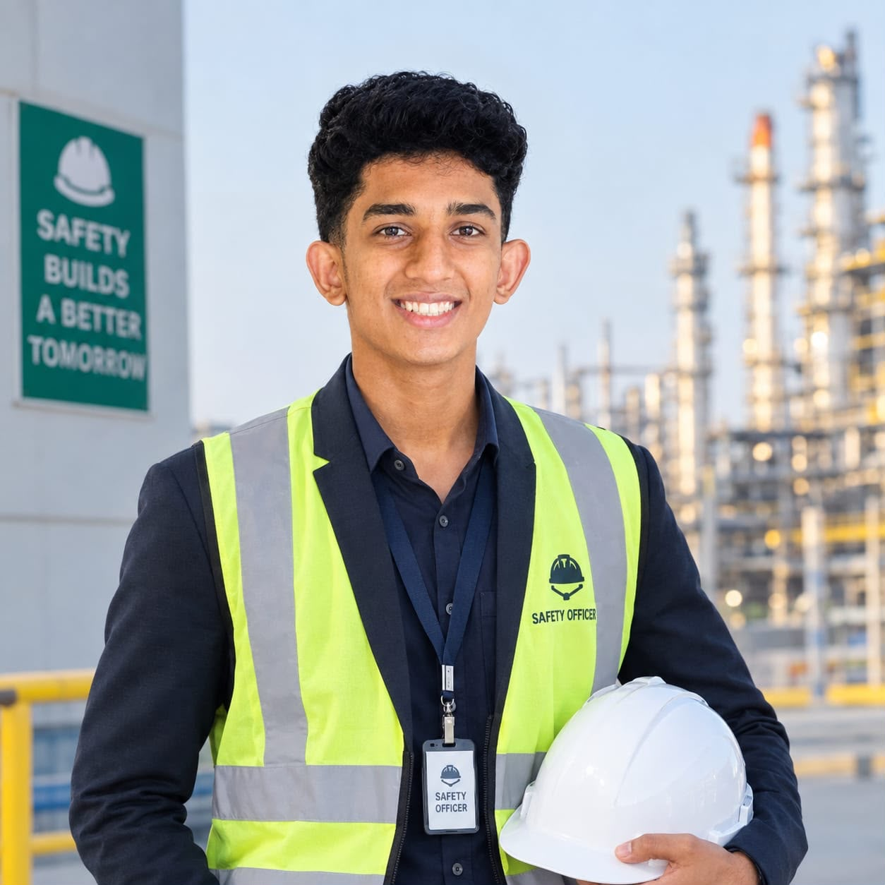
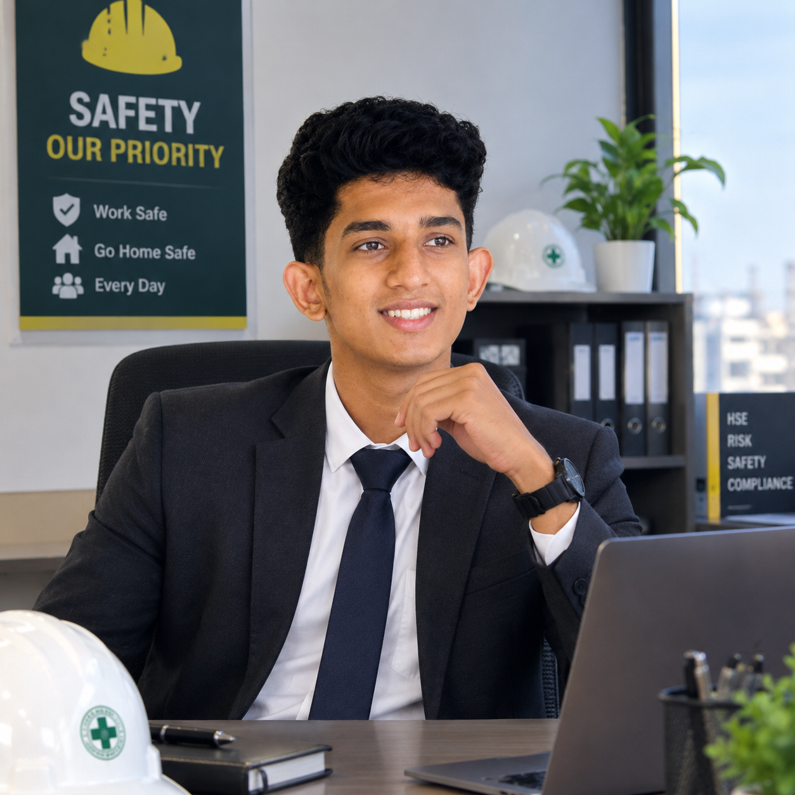

Safety Certification
Certificate / training name
Add certificate ↗I'm Adwaith VK, an aspiring Safety Officer with a B.Sc. Physics background and a strong interest in workplace safety, hazard prevention and emergency preparedness.


I am a B.Sc. Physics student building my career in occupational health and safety. My academic background has developed my analytical thinking, attention to detail and problem-solving approach.
I am focused on developing practical safety knowledge and becoming a dependable professional who can identify hazards, support risk control and promote a strong safety culture.
Recognising unsafe acts, unsafe conditions and workplace hazards.
Understanding hazards, evaluating risk and supporting control measures.
Basic awareness of fire prevention, emergency procedures and preparedness.
Promoting appropriate PPE selection, use and safe work practices.
Interested in inspections, checklists, reports and safety records.
Clear communication, teamwork and safety awareness among workers.
Add your verified certificates here. Each card can be connected to a certificate PDF or image.
Certificate / training name
Add certificate ↗Certificate / training name
Add certificate ↗Certificate / training name
Add certificate ↗A continuously developing professional portfolio focused on workplace safety, hazard awareness, risk control and safety communication.
Replace this section with an industrial visit, college project, safety audit exercise, risk assessment or other practical work.
Download my latest CV for education, certifications, skills and career details.
Interested in connecting for a Safety Officer opportunity, internship, training or professional discussion?